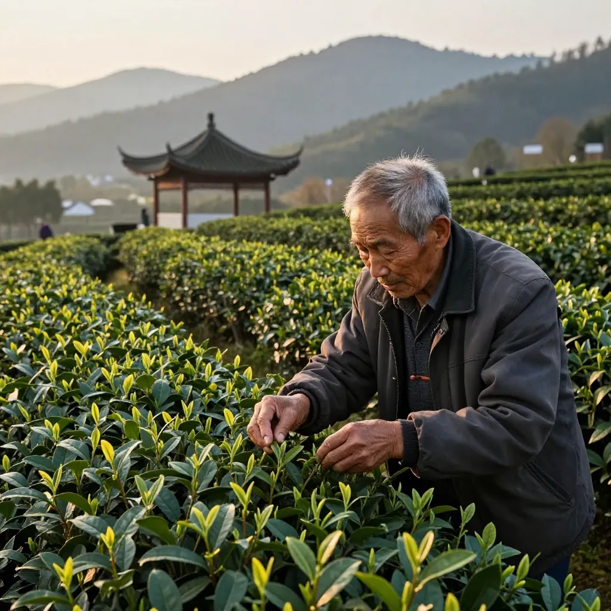
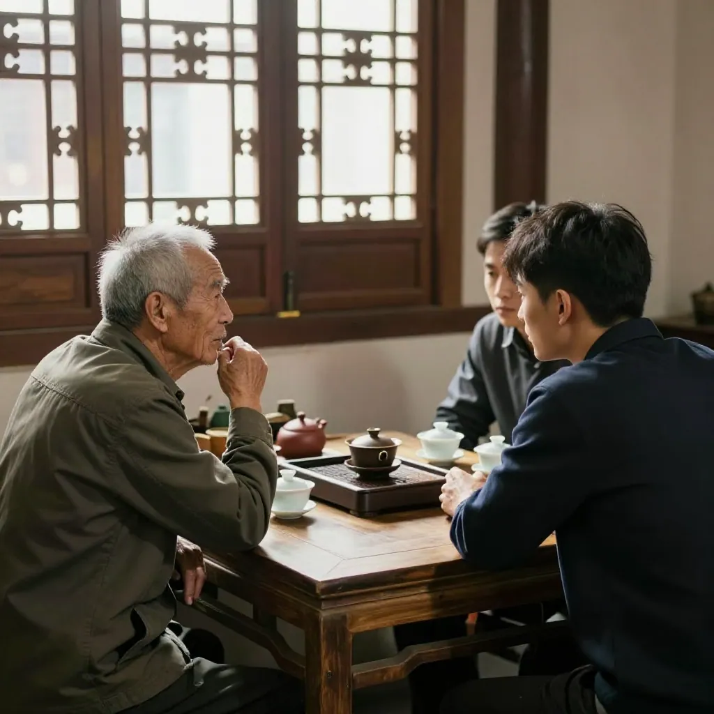
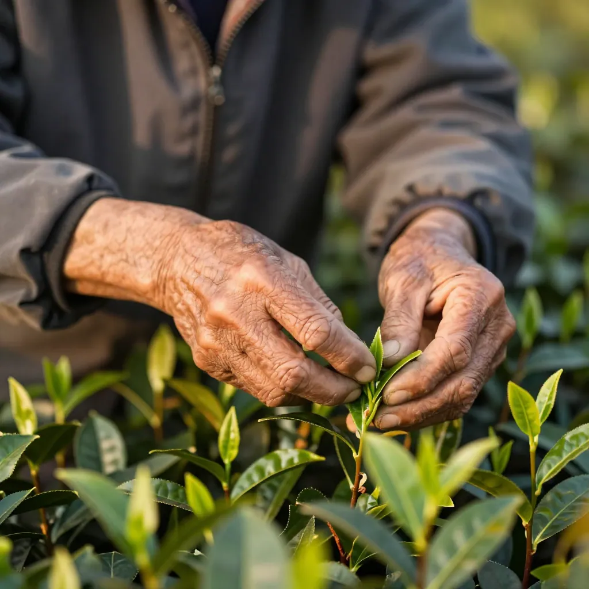

父子两代，半座茶山的执念
有人种茶是为生计，有人守茶是为一句"老味道"。国庆第一天，我在惠州东湖花园这间小店里，碰见了这两种人。
【场景开头】
十月一号，惠州东平还热着，但桂花气悄悄冒了出来。今天一开门，店里就坐了三个人——老吴从凤凰山下来的，背着一只褪色的军用水壶；老吴的儿子小吴，28岁，刚从广州辞了职回来接班；还有一个老面孔李总，在东平开凉茶铺二十年，每年国庆都来坐。
老吴一进门就叹了口气：「凤姐，我这儿子，怕是要把祖宗那点茶山给败了。」
小吴低着头不吭声，我笑着把人往茶桌边推：「来，坐！今天我正好到了一批桂花蜜韵的新丛，先泡一泡解气。」
【第一幕：种茶人的执念】
老吴坐下，我从罐子里取了9克桂花蜜韵投进盖碗。他一闻，眼皮跳了一下：「嗯，这香气正，是我该配的。」
李总忙着烧水：「老吴，你那半座茶山，五十多年了，我从小喝你家的茶长大的。我爹当年说，凤凰山的茶分两种——你家的蜜兰香，和别人家的蜜兰香。」
老吴摇头苦笑：「老一辈的山头，就我一个眼神守着。我爹1998年走的，临走跟我说——'乌岽顶上那片老丛，一年只采一季，春茶前那一拨露水叶，别动机器，手工采，一天一茶两斤半，多一斤都不是那个味'。我守了三十年，一斤没多采。」
小吴终于抬头：「爸，我没说败，我是想——用短视频把咱家的山头卖出去。你那手工采一天两斤半，我一天发五条抖音，订单来了你照样采你的茶。」
【第二幕：接班人的执念】

我把沸水高冲下去，100度，第一泡洗茶。香气粉粉地散开来，老吴的鼻子动了一下。
「你拍视频，茶叶不变味吗？」老吴瞪儿子。
小吴掏出手机给我看：「凤姐你看，这是我七月份拍的——我爸在茶园里，手指头全裂口，但采茶的手法还是五十年那一套。这条视频，二十万人看过，有人专门从潮州开车上来买茶。」
周铜好奇，凑过来看手机：「哎哟，老吴你那采茶视频，我看过！原来是你儿子拍的！」
「网友说的——'看老吴采茶，比看什么电影都治愈'。」小吴苦笑，「可我爸不让说'治愈'两个字，他说——采茶不是表演，是苦差。」
老吴被噎住了，半晌才说：「我不是不让拍，是怕你把老祖宗的茶山，搞成网红景点。」
我笑着分茶：第二泡出汤，汤色金黄透亮。「老吴，小吴这孩子没把茶山当景点。他把你的苦差，变成了让城里人愿意为一斤茶多等三天的耐心——这是好事。」
【第三幕：二十年的凉茶铺】

李总接话：「老吴，我那凉茶铺开了二十年，头十年卖凉茶，后十年凉茶十年卖不动了——大家都去买奶茶了。十年前开始改卖凤凰单丛，第一家就是从你这批的，一斗十斤，五年没换过。」
「李总你那是念旧。」老吴摇头。
「不是念旧，是念我爹。」李总忽然认真了，「我爹开凉茶铺的时候，门口就摆着一只粗陶壶，里面泡的就是你家老吴的蜜兰香。老人家说过——'这茶凉着喝，比凉茶还下火'。现在我爹走了，我那壶还在，每天早上煮一壶放凉了，街坊来讨一口，'老李，来碗茶'——比卖凉茶还热闹。」
老吴的眉头松开了。我又取了一壶小烧炉，9克桂花蜜韵进去提香5分钟：「老吴，李总念旧，小吴念新，两父子一天都没错——错的是你夹起茶叶当作守一辈子的山头，不让别人上。」
【第四幕：一家茶馆的二十年和半座茶山】
茶过三泡，李总问我：「凤姐，你那小店也开了二十年了吧？」
「十九年了。」我笑，「明年二十周年，国庆前一个月，小吴过来拍一条——半座茶山的故事。你和李总都出镜。」
小吴眼睛亮了：「凤姐，你愿意？」
「愿意。但你得先在山头住三个月——采茶、炒茶、焙茶，三道工序一道不能少。三个月后你拍出来的视频，才是真茶山。」
老吴盯着儿子，半晌才说：「那明年国庆，我带你上山，让你拍一天，看你怎么把一个煎茶香，卖出三单桅的数字。」
小吴眼眶红了：「爸，我……」
老吴摆手：「别谢，谢你凤姐。她当年在我最难的时候，一年一次性拿了三十斤蜜兰香，让我有钱请人上山采茶，没让茶园荒了。」
我笑：「老吴，那是二十年前的事了——那年你儿子才八岁。」
夕阳从东湖花园沿江铺面斜斜照进来，桂花香和茶香混在一起。一家凉茶铺的念旧，半座茶山的守望，二代茶人的接班——这三双手，缺一环，香气都不圆满。
FAQ总结
Q：老丛蜜兰香和普通蜜兰香有什么区别？
A：乌岽顶老丛树龄50年以上，根系深，吸山韵足。香气高扬带兰花底、耐泡12-13泡，回甘持久。新丛树龄10-30年，香气清新但韵底薄，耐泡8-10泡。
Q：二代茶农接班最难的是什么？
A：最难不是卖茶，是让老一辈相信"新办法不会弄脏老味道"。老一辈守山如守命，新一辈把山头讲成故事，守山人也要有自己的故事。
Q：凉茶铺改卖凤凰单丛，靠谱吗？
A：靠谱。广东凉茶铺转型茶饮店，凤凰单丛是天然衔接——同样清热回甘、街坊认老味道。但要选对香型，蜜兰香、鸭屎香老少皆宜。
Q：国庆买凤凰单丛送礼，怎么选？
A：看价位选成熟茶——300-500/斤的蜜兰香、鸭屎香最适合送礼，香气高、牌子硬、复购高。礼盒装认准源头直供，惠州凤凰茶业可一件代发、礼盒定制。
标签
#凤凰单丛 #潮州凤凰山 #二代茶农 #桂花蜜韵 #蜜兰香 #老丛单丛 #凉茶铺转型 #惠州茶叶批发 #茶人故事 #国庆茶礼
联系方式
👤 阿凤姐（林玉凤）
📱 13435567385 | 💬 QQ：1079790744
📍 惠州市惠城区东湖花园一区沿江商铺89-136（凤凰茶业）
🕐 每天 09:00 - 21:00 | 🌐 批发 | 零售 | 试饮 | 团购 | 礼盒定制 | 海外直供对接
下回说说那位从深圳辞职，回惠州开了一间"只卖一款茶"小茶馆的90后——她说"我宁做一款茶的行家，不做一百款茶的杂家"，店里就一款鸭屎香，一年居然卖了二十万。敬请期待。